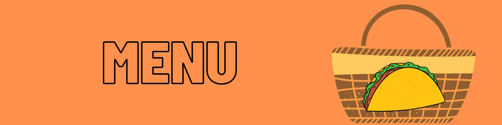
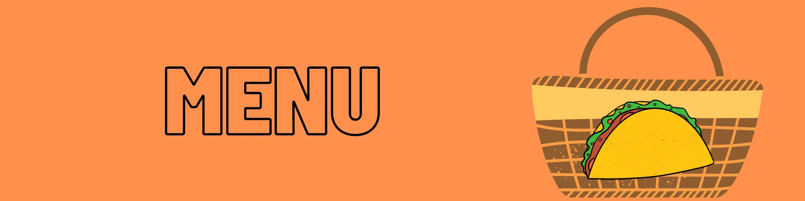

Conoce mas sobre nosotros
Somos un negocio joven que empezó en 2018 y que sigue en crecimiento,somos 100 % texmeluquense orgullosamente Poblanos, adoptando las costumbres del estado vecino Tlaxcala mejorando, sason y calidad. Hemos creado un nuevo estilo de vender tacos de canasta .
MISION
llegar más allá de todas las expectativas que tienes de los tacos de canasta tradicionales llegando así a todos tus momentos especiales.
VISION
Ser la cadena de tacos más importante en el giro de tacos de canasta de todo México.
 |
 |
EL REY DEL TACO TEXMELUQUENSE

Fundador JOSE ALFREDO BARRERA LARA

Inicio- Menu- Sucursales- Eventos- Contacto
Copyright 2022 mandanos un mensaje via telefonica a 248-195-52-00